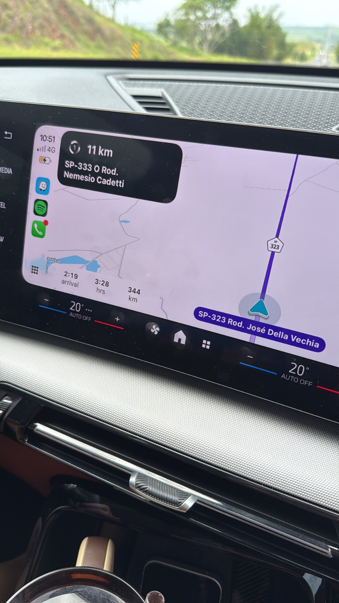

Coluna 1 · Teste de coluna nova
Resenha F1
Um resumo do que foi o grande prêmio do Brasil de Fórmula 1
Pedro Brandão8 nov. 2026 · 1 min de leitura
Esse último fim de semana aconteceu o grande prêmio Brasil de fórmula 1 de 2026. Este ano marcou pela estreia do Rafael Câmera na maior categoria de automobilismo do mundo.
E como que foi a estreia?
Com grande dificuldade em manter o carro na pista, Câmera fez uma boa estreia dadas todas as condições de tempo e pista.
- chuva
- Frio
- Pista molhada
- Pressão da torcida
Difícil corrida para estreantes.
O resumo final é que chegou em último colocado. Mas pelo menos chegou.
Passageiro da agonia
De piloto a passageiro.

Para finalizar, vamos mostrar ao nosso piloto fresco como que se pilota de verdade.